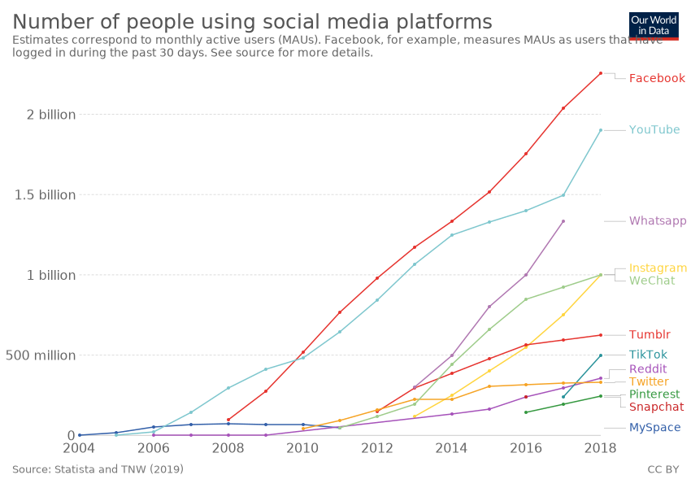

For my Essay I will be discussing in my own opinion how Tim Berners lee changed the way that we now communicate. The quote that has always stuck with me from Tim Berners Lee is:
“I believe we can build a Web that is truly for everyone: one that is accessible to all, from any device, and one that empowers all of us to achieve our dignity, rights, and potential as humans.”- Tim Berners-Lee.
The main facts that I will take into consideration to form my opinion will be:
The World wide web and how it has changed the 20th and 21st Century in the forms of communication and also the advantages and disadvantages of the World Wide Web
Before the creation of the World Wide Web the main source of communication was the telephone. There were other forms of communication still being used. For example, Morse code and the printing press. The printing press tool helped shape our world from the 15th century and is still widely used today to communicate. The printing press is used to share information via posters, books, advertisements, propaganda etc.
If you think about it, the world wide web is a digital version of this but on a much larger scale reaching areas of the world that many would not think possible when the world wide web was first designed. When Tim Berners Lee first proposed the idea of the World Wide Web to his boss, he labelled it himself as
HTML which stands for Hypertext Mark-up Language was a vital part of the process for his design as it is essentially the building block of a webpage. It is used to design the structure of the webpage. This was very important for the design as it makes a webpage user friendly and understandable for a user. Over the years of development, the amount of designing that you can do to a website is almost limitless as new structure designs are developed. This is seen as the backbone where all designs begin.
The 2nd element that was needed for the World Wide Web was URI which stands for Uniform Resource Identifier. It is now known as URL and provides the website with an address to make it easier for the user to find a specific website.
HTTP which stands for hypertext transfer protocol defines how messages are formatted and transmitted on the world wide web.
The impact that the World Wide Web has had on not only our communication but as a society, I feel that nobody could have predicted the scale of how big it has become. By developing this design, it has had an impact on everything around us and how we now think and communicate in the 21st century. By being able to send information to anyone and to also share your information with another peer within minutes in today shows how much of an effect an idea in your head can impact the world as we know it.
------------------------------------------ ----------------------------------- ---------------------------
------------------------------------------ ------------------------------------------------- ---------------------------------------------------------- -------------------------------------------------- ------------------------------------------------------ ------------------------------------------------- ---------------------------------------------------------- ------------------------------------------------- ---------------------------------------------------------- ------
---------------------------------------------------- -------------------------------------------- ------------------------------------
------------------------------------------ ------------------------------------ --------------------------
Social Media
The most popular form of communication in the 21st century using the world wide web is social media. For this part of my essay I take each of these points and discuss the advantages and disadvantages relating to the aspects and effects of social media.
The main social media websites that are being used today are:
- Facebook
- Twitter
- Instagram
- Snapchat
This means that over a third of the world’s population has connected to social media to communicate. From this statistic you can see that the growth of social media communication is extraordinary and has become one of the main forms of communication in today’s society. This is huge advantage for many different reasons. It helps with advertising for any kind of business by getting communication spread across the world instantly. One of social medias main use to connect with others from the comfort of your own home, long distance etc. Apps like snapchat and Instagram have also changed forms of communication. Their main way for users to communicate through images